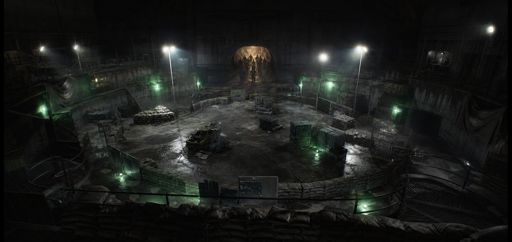
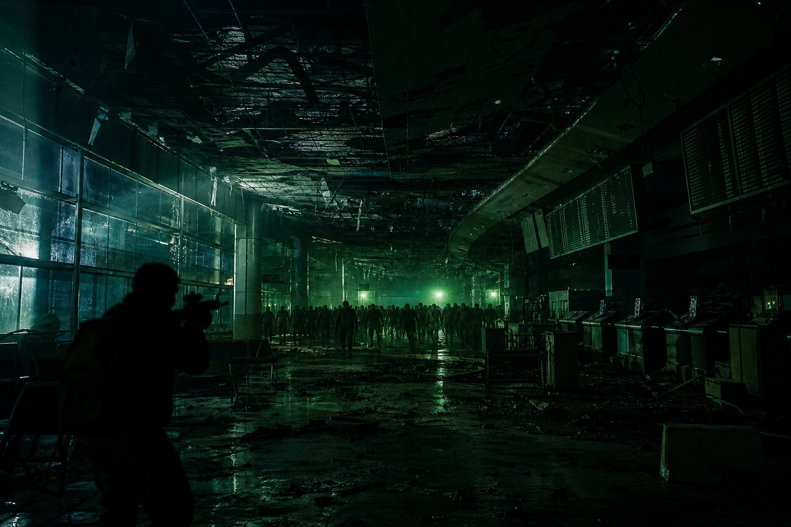
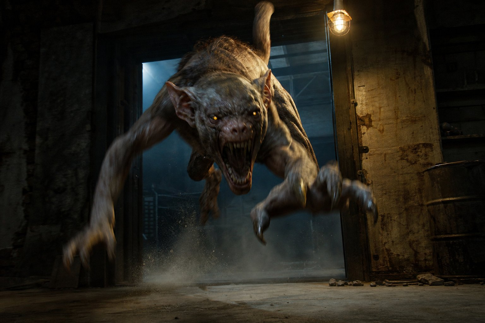

alt="Aéroport infesté par la horde en mode Endless" loading="lazy">
1. Principe : survivre, pas extraire
Zombie Endless est le mode PvE de la saison. Vous ne risquez pas votre stash : le jeu vous attribue une classe au départ et un loadout initial correspondant. L'entrée coûte des Koen, sans limite de nombre de parties.
Le niveau de menace monte continûment au fil de la raid : plus de mutants, plus forts. Quand tout l'effectif est mort — ou quand l'équipe choisit d'extraire activement — la raid se termine. Chaque seconde survécue = plus de Merit.
La règle la plus dure du jeu
Si un opérateur tombe, il passe en état downed permanent pour le reste de la raid. Pas de réapparition, pas de reprise. En solo, un mistake de Broken = la run est terminée. C'est ce qui transforme l'Airport en champ de bataille profondément asymétrique.
2. La boucle de survie
- Mission d'arme — chaque niveau de menace propose un choix d'arme. Prenez-le, improvez votre équipement avant que les ennemis ne deviennent des éponges à balles.
- Amélioration — achetez des améliorations de personnage et de statistiques au marchand.
- Missions d'extermination — en les remplissant, vous obtenez des clés pour les salles verrouillées.
- Salles verrouillées — un weapon case àopened : chance d'arme nettement plus puissante.
- Jetons zombies — monétisés en supplies et contre-mesures tirées au sort (exclusives à la raid).

3. Priorité d'élimination
Solo
Ambusher > Reaper > Bloater > Normal > Breacher
L'Ambusher vous maintient en suppression jusqu'à la mort. Le Reaper vert vous one-shot au-delà du niveau 4. Les Normals se tuent au corps à corps, le Breacher se laisse canaliser.
En squad
Reaper > Ambusher > Bloater > Normal > Breacher
En groupe, le Reaper est prioritaire car son acide rend la carte impraticable. Attention au combo le plus dangereux : le Breacher vous charge pendant que le Reaper vous crache dans le dos.
Les Reapers verts tuent en un tir
Au-delà du niveau 4, un Reaper acide peut vous mettre en un coup. Arrêtez-vous de bouger, tuez-les en premier, et ne tenez jamais une position à l'intérieur d'une flaque.
Les gisements d'IA du mode Endless
Les zombies de la Saison 7 ne sont pas des points de vie qui marchent : ce sont des agents de jeu avec des règles de pathfinding, des routines et, parfois, une taille qui change leur comportement. Plusieurs zones de l'Airport sont neutralisables en compris le mécanisme, sans tirer un seul coup de feu.
| Zone | Ce qu'on y trouve | Comment l'exploiter |
|---|---|---|
| Conduit de ventilation dans la gaine d'ascenseur (zone centrale, salle du chariot élévateur) | Un abri où les zombies ne peuvent pas vous atteindre | On s'y cache ; seule l'ambushade d'un Assautant finit par y entrer, et sa taille diminue pendant le bond, ce qui ouvre une fenêtre |
| Sous les avions et dans les hangars de la zone d'exposition | Des zones où le Briseur ne peut pas charger | Les conteneurs et les avions bloquent sa course ; contre un Breacher, la parade est de se placer à l'abri et de tirer au corps à corps — impossible de viser la tête |
| Escaliers du secteur central | De petites tumeurs en travers | Laissées en place, elles bloquent la horde ; ne tuez que les grosses tumeurs derrière elles |
| Voitures de police | Un piège sonore | Leur sirène attire la horde dès que vous approchez : approchez-en uniquement dans le cadre d'une mission, sinon vous déclenchez une vague pour rien |
| Automatique extérieur de l'Airport | Un moyen de contenir la horde | À utiliser en dernier recours, quand le combat est déjà perdu : elle bloque les zombies dans un couloir |
Deux avertissements qui découlent de cette lecture. D'abord, ne comptez pas sur le corps d'un teammate à terre pour retenir la horde : certains zombies passent devant sans s'y arrêter, mais d'autres s'y accumulent et bloquent alors le passage — le résultat est aléatoire, ne le construisez pas. Ensuite, ne vous approchez pas des voitures de police hors mission : la sirène est le moyen le plus sûr de transformer un raid tranquille en catastrophe.
Sources : retours Reddit de septembre et octobre 2026 sur l'Airport en mode Endless — Communautaire. Ces positions sont propres au mode Endless et à la Saison 7 : elles ne s'appliquent ni à la Zone infectée ni aux cartes classiques.
4. Astuces de terrain
- Conteneurs et sous l'avion : les Breachers sont trop grands pour y entrer ni pour charger. Bonus : leur tête est hors de portée — vous ne pouvez pas les tuer à la tête, donc prévoyez de la munitions.
- Le puits de ventilation au centre de la carte (gaine d'ascenseur, salle avec un chariot élévateur) est inaccessible aux zombies, sauf à l'Ambusher qui peut sauter dedans — et perd de la taille en le faisant.
- Ne restez pas à l'entrée : les Reapers et Ambushers vous atteignent quand même.
- Le corps bloque la horde : un opérateur mort à un choke point suffit à ralentir les zombies qui ne franchissent pas.
- Voitures de police : leurs sirènes s'activent à proximité et attirent des hordes. Restez à distance sauf si c'est une mission.
- Mission « défendre la transmission » : les zombies n'attaquent pas l'équipement et priorisent les joueurs. Activez, puis occupy une position plus avantageuse.
- Automatique de l'Airport en extérieur : il peut piéger une horde entière si le combat est perdu.
- Shotguns = rois : dégâts de base élevés sur les zombies normaux, et ils touchent plusieurs ennemis d'un seul tir, là où un fusil automatique ne touche qu'un corps à la fois.
- Niveaux 3 de grenades : phéromones et molotovs sont efficaces pour un contrôle de horde instantané. Gardez vos variantes de haut niveau pour les boss et les Reapers qui crachent.
5. Le marchand en Endless
- Le marchand existe en Endless avec 8 emplacements fixes, 2 marchands par emplacement, disponibles dès le début du match.
- La monnaie n'est pas le Koen mais le jeton zombie.
- On y achète des supplies normales et des contre-mesures zombies — chaque achat de contre-mesure tire une contre-mesure exclusive à la raid au hasard.
- En mode Tactique Ops, on peut acheter des Mystery Supplies jusqu'à 2 fois par raid ; en Endless, l'offre est élargie (supplies + contre-mesures zombies).
6. Le Merit et les capacités permanentes
Chaque mission remplie, chaque mutant abattu rapporte du Merit. Le cumul fait monter votre niveau de croissance Endless, et chaque niveau débloque une capacité inédite — effective uniquement en mode Endless.
- Coup de pied (Kick) — capacité exclusive du mode, sur la touche
~par défaut : elle consomme de l'endurance pour repousser les mutants devant vous. C'est la meilleure protection contre l'Ambusher et le Breacher. - Les capacités suivantes s'achètent avec le Merit hors raid et s'appliquent définitivement à vos runs Endless.
- Défi de Merit (hebdomadaire, reset lundi 5 h UTC) : votre meilleur Merit hebdomadaire en Endless est converti en 3× Koen, plafonné à 3 000 000 Koen par semaine.
7. La ligne de missions zombies
La saison 7 ajoute 40 missions zombies sur un onglet dédié, avec des récompenses par palier :
| Étape | Missions | Contenu |
|---|---|---|
| Stage 1 | 15 | Base de la progression zombie : échantillons, conteneurs, premiers marqueurs |
| Stage 2 | 15 | Objectifs plus exigeants, récompenses de caisses de loot |
| Étape indépendante | 10 | Ligne exclusive Zombie Endless : survie,-Merit, contre-mesures |
Terminer la série de missions zombies garantit l'Elysium, le nouveau drop rouge de la zone infectée.
8. Conseils de survie
- Ne sur-engagez pas : chaque balle tirée signale votre position exacte aux autres squads… et dans un raid PvP, aux humains.
- Gardez des munitions économiques et des Koen pour les vagues à haute menace.
- Améliorez vos PV de base : un Ambusher + un Reaper qui s'enchaînent, c'est un one-shot sans marge.
- Jouez en équipe — officiellement recommandé : les القدرة se combinent et le downed permanent d'un joueur ne vous élimine pas.
- Fixez-vous un objectif de temps (« je tiens jusqu'au niveau de menace 12 ») plutôt que « je veux le plus de loot ».
L'ordre recommandé par la communauté
No Man's Land pour apprendre les comportements des mutants → Endless pour l'action et le Merit → Infected Zone pour l'expérience complète loot / combat / extraction. Et l'erreur classique :→ le Reaper en premier, toujours.